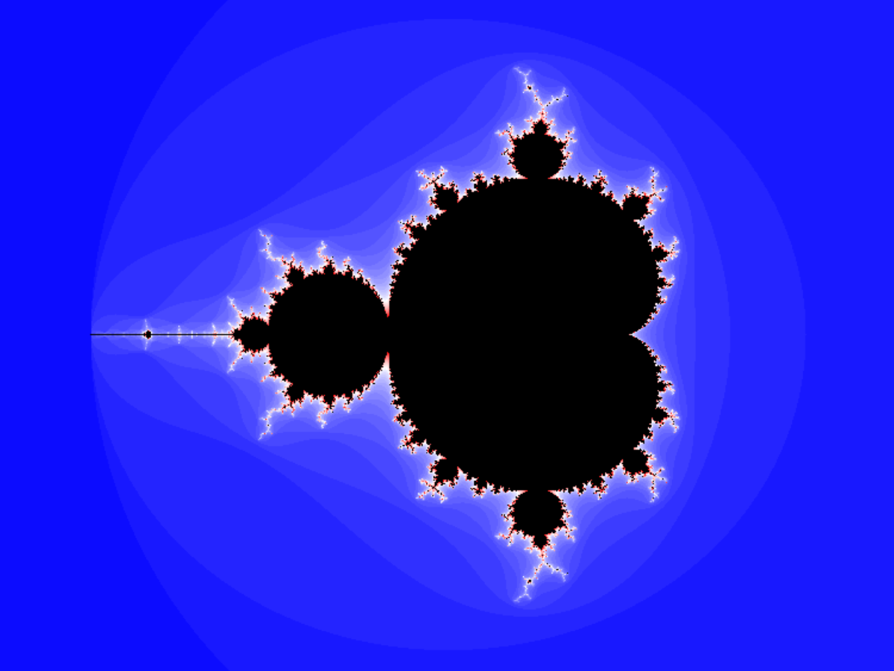

fract-ol
Fract-ol is a graphics programming project that explores the beauty of fractals through complex analysis.
Learning Outcomes
- Learned how to use the MiniLibX graphics library.
- Developed an understanding of the mathematics behind fractals.
- Learned low-level graphics rendering in C.
- Implemented event handling for interactive applications.